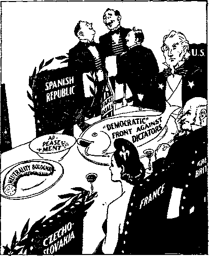

Contents \
The Pogrom of November 10, 1938
World-wide Convention Centering in New York 7
Scientific Kidding of the Jitterbug
Kingdom Service in Mount Lebanon
Crusade for Pope in Government
, A Fleeting Glimpse at Science
Published every other Wednesday by
WATCHTOWER BIBLE AND TRACT SOCIETY, INC.
117 Adams St., Brooklyn, N. Y., U. S. A.
Editor Clayton J. Wood worth
Business Manager Nathan H. Knorr
Five Cants a Copy
fl a year in the United States JI. 2 5 to Canada and all other countries
NOTICE TO SUBSCRIBERS
Remittances: For your own safety, remit by postal or express money order. When coin or currency is lost In the ordinary malls, there is no redress. Remittances from countries other than those named below may be made to the Brooklyn office, but only by International postal money order.
Receipt of a new or renewal subscription will be acknowledged only when requested. Notice of Expiration is sent with the journal one month before subscription expires. Please renew promptly to avoid loss of copies. Send change of address direct to us rather than to the post office. Your request should reach us at least two weeks before the date of ieaue with which it is to take effect. Send your old as well as the new address. Copies will not be forwarded by the post office to your new address unless extra postage is provided by you.
Published also in Afrikaans, Bohemian, Danish, Dutch, Finnish, French, German, Greek, Hungarian, Japanese, Norwegian, Polish, Portuguese, Spanish, Swedish, Ukrainian; also special Australian edition .in English.
OFFICES FOR OTHER COUNTRIES
England 34 Craven Terrace, London, W. 3
Canada 40 Irwin Avenue, Toronto 6, Ontario
Australia 7 Beresford Road, Strathfield, N.S.W. South Africa 623 Boston House, Cape Town
Entered as second-class matter at Brooklyn, N. Y., tinder the Act of March 3, 1879.
Not Likely
a week’s Magazine.
Henpeck (who has just overheard hip wife scolding the maid)—You and I both seem to be in the same unfortunate position, Jane.
Maid—Not likely! I’m giving her notice tomorrow,—Stray Stories
Advice on Ornithology
Bookworm: Can you help me to select a good book 1
Librarian: Here is a good one about a cardinal.
Bookworm: No, I am not interested in religion.
Librarian: But this is a bird.
Bookworm: No, thanks; I am not interested in his private life, either.
Holy Water Erom Lourdes
An old woman at the Ulster frontier was asked if she had anything to declare. "No, nothing at all.” “But what was in the bottle?” “Oh, only holy water; holy water from Lourdes.” The customs officer pulled the cork. “Whisky it is,” said he. “Glory to God!” cried the old woman; “a miracle !”•—The Countryman.
\ ■
Reasonable Caution
Young Mac—Father, I have to have an atlas for school.
Old Mac—Ah, weel, ye’d better wait till the war’rid’s mair settled.—Labor Herald.
Better Take a Look
The new 200-inch telescope at Mt. Palomar will soon be ready. A peep through it is recommended for dictators who have the notion they control the universe.
The Better Hole
Landlord: What do you think of the house as a whole?
Man viewing it: As a hole it’s all right, but as a house it’s awful.-^jondon Courier.
It Happens Every Day
A train conductor is one of the few men who can tell a woman where to get off and get away with it.
“And in His name shall the nations hope.”—Matthew 12:21, A.R.V.
Volume XX Brooklyn, N. Y.f Wednesday, July 26, 1939 Number 518
Women in Nazi Germany
HOW many do know that there are women’s concentration camps in Nazi Germany?
Yes ... indeed they are there and the writer met a recent
arrival from Nazi Germany, a woman, who had spent no fewer than eleven months in such a camp in addition to being confined three months in various Nazi prisons. ■
The veracity of her story is confirmed-by documents issued by the German government attesting to her confinement and final dismissal for lack of evidence. _
Part of the experiences which this lady—she is above middle age and a grandmother—has detailed in a lengthy essay read as follows:
I was arrested after my return from Hol, land by the Gestapo police. They accused me of having smuggled German currency out of the country and of carrying on an atrocity campaign while staying there with my Dutch' relatives.
There was, of course, not the slightest evidence to support this accusation, nor was there any reason why I should be so foolish as to speak against Germany when I had to return there.
Yet I was kept for three months in solitary confinement in the Ett-strasse and the Stadel-heim prison in Munich before the authorities decided to send me to the concentration camp of Lichtenburg, Saxony. The trip there took a week. I was locked in with two other women prisoners, one of whom was a member of the Society of Serious Bible Students [Jehovah’s witnesses]. They do not believe in giving the ; Hitler salute. She had already served six months in a prison and was now on her way
JULY 26, 1939 to the same camp as I was destined. The air in this small prison railroad-compartment, which was designed to hold but one person, was terrible. We were treated as if we were the worst sort of criminals. All of us were handcuffed. When we finally arrived in Lichtenburg we had become a group of eight women gathered from all parts of Germany.
Lichtenburg is a medieval castle, occupied at one time by King Henry the. Strong. The room to which we were assigned formed part of this castle. It was far too large to be heated, and during the ensuing winter months many of us women suffered seriously from the severe cold. It housed Jewish prisoners only.
There was a shortage of prison outfits. We had to wear our own clothes during the first months. As all the work in the eamp had to be done by us, these clothes were torn to shreds within a few weeks. One of the prisoners had been arrested in a sun-bath and had come into the camp dressed in nothing but a bathing suit. The few rags she wore had been given her by the fellow prisoners. All the menial labor, such as the cleaning of toilets of the camp, was assigned to the Jewish prisoners.
1000 inmates
All together there were at the time about 1000 women in the camp . . . 150 Jewish prisoners, about 300 members of the Society of Serious Bible Students, about 200 political gentile prisoners and several hundred criminal' prisoners who, after serving their prison sentences, were ordered to do additional time for the purpose of “re-education”. We Jewish prisoners were not beaten though the women camp-guards seemed to take a sadistic delight in heaping abuse and insults on our group. The age of prisoners ranged from fifteen years up to seventy.
3
SERIOUS BIBLE STUDENTS
Terrible was the lot of the Serious Bible Students. However, they were a brave people, who bore their fate patiently. Though the gentile prisoners were forbidden to talk to us, these women never observed this regulation. They prayed for us as if we belonged to their . family, and begged us to hold out fortitudin-ously and asserted that God would not desert us.
When Hitler made two speeches during the fall all camp prisoners with the exception of the Jews had to gather in the prison-yard and listen in. Among them was this group of Bible Students. Yet, when it came to lift up their hands in salute and to sing the Horst Wessel song they refused to do so. For this they were beaten with rubber truncheons and afterwards sprayed with water issuing from a firehose ... at a'time when bitter cold weather prevailed. In addition they were blinded by huge searchlights. For two weeks they were not permitted to do any handicraft work, while general work was denied to them for even a longer period. Besides this punishment they were detailed to special arrest, which meant that for three days a week they received but one meal a day . . . consisting of “Ersatz” coffee and a piece of bread in the morning. Only every fourth day they were given two additional meals, and allowed to enjoy a walk in the prison yard.
DARK CELLS
Several were put into so-called “dark cells”. These were dungeons from which all light, could be shut off. The “bed” there consisted. of a bag of straw. Only every fourth day was daylight permitted to penetrate into these cells.
This is bestial when one considers that these individuals really had committed no crime whatsoever and were anything but criminals.
The cries of these women when they were beaten up in their cells were horrifying and shall forever remain in my memory.
What made us feel more depressed was that there was nothing that we could do for them and writing to the outside world was out of the question, of course.
None of these women prisoners will ever emerge from camp alive, unless they desist in their attitude.
During the winter, ice formed on the damp stone walls of our dormitory. None of the windows in the room would shut, and as a consequence many of the women suffered from frost bite.
An epidemic of dysentery swept the camp at one time, caused by impure water and mildewed bread.
At another time influenza broke out among the prisoners. /
, The entire castle was fortified by a netting of barbed wire charged with a high voltage of electricity.
The women guards were canailles of the lowest order. Four of them were dismissed on charges of Lesbianism and drunkenness.
One of the most sadistic ones, who delighted in telling us Jewish women that we should all be lined up in front of a prison wall and shot, was caught stealing money from the prison till, while another one was accused of sending information to France,—Reprinted from June, 1939, issue of The Idealist (New York).
The Pogrom of November 10, 1938
j \ “BERLIN: The whole campaign had been prepared by the authorities three to four weeks beforehand. All Jews had been ordered to appear on certain days at the police stations according to the alphabetical order of their names. They were to bring with them any weapons they might still possess. In those days you could see long lows of Jews standing in the police stations in order to hand over all firearms, fencing weapons, swords, etc. The arms had to be handed over irrespective of whether the owners possessed a license for carrying arms or not. It is fairly obvious that this action was intended to prevent any resistance to the destruction and pillage which was planned for the future. - The decree of Himmler asking all Jews to hand over their weapons was issued only after the pogrom had started. It was publicly announced shortly afterwards that many weapons had been confiscated from the Jews.
“A further measure in preparation for the events which were to follow was that all Jewish shops were marked months before, whilst previously it was sufficient for Aryan shops
to “be distinguished by exhibiting the posters of the Labor Front. The new regulation demanded that every second shop window of a Jewish shop was to have the full first names of the owners in oil-color and in letters which were to be at least 20 centimeters large and painted on the windows at eye level. In some districts where the measures were carried . through with particular strictness, for instance in the Schoenhauser Allee, the Jewish first names of Israel or Sara had to be added to the other first names under all circumstances.
“In Hindenburg the SA did not take part in the pogrom; SS men only were responsible for carrying it out. The SA is not reliable enough. Its members have stolen too much when they drove the Polish Jews across the frontier. The signal for the pogrom was given at 11 o’clock at night and the police were told at the same time not to interfere except to keep away the 'curious public’. About 4 o’clock in the morning the inhabitants were awakened by a forceful detonation near the synagogue, and shortly after the synagogue was on fire. SS troops came on scene, police and firebrigades turned up as well. The fire-brigade restricted its activity to protecting the buildings in the neighborhood. Shortly after the flames burst out of the building—that was on November 9 at about 5 o’clock in the morning-district leader Jonas came along to tell the police that no one was to be admitted to the place of the fire. .The police thereupon drove all spectators away who had assembled outside the burning building and arrested a few people who had passed critical remarks. In the meantime flats and shops belonging to Jews had also been demolished. At about 8 o’clock in the morning prisoners under the charge of their wardens appeared on the place where the synagogue had been burnt down. Carriages,' belonging to the magistrates were also there' The work of clearing up was started at once. The walls of the synagogue which were ' still standing were pulled down by the members of the Hitler Youth by means of band grenades and dynamite. A convoy of Jewish boys and girls was then brought to the place, who had to sort out the metal from dirt and ashes and walls and to clean it. Then it was loaded onto a police car which was waiting to take it away. ‘
; “Whilst the Hindenburg synagogue was still
L; JULY 1939 burning, troops of 4 or 6 SS men marched to Jewish firms, first to the glass works and then to the large porcelain works of Eisners which were destroyed. Usually two SS men went together with a policeman to the private flat of the owner to ask for the key of the shop. Then the shop was "finished off’ and afterwards the private dwelling had a turn. All reports say that as a rule not a single article remained unbroken. Carpets and clothes, mattresses and blankets were torn into pieces and cut up. In other words, everything was destroyed and demolished. Thus the work of destruction went cn and street after street was worked through. About 40 different departments of the SS were probably engaged in this action,
“Only one clothing shop, owned by Himmelfarb, did not fall into the hands of the barbarians, because when handing over the keys the owner declared he would give his whole business to the Winter Relief Fund. A short time afterwards a lorry arrived from a large foundry to fetch the clothes, which had a value of about 85,000 marks, for the winter relief center. In the Dorotheenstrasse at Hindenburg some SS men entered the house of an old Jewess of 83 years of age and took away from her the last 10 marks she had in her possession. They also demolished her furniture in room and kitchen, leaving nothing unbroken.
“Third Report: We have learnt from reliable sources that 114 people had to appear before the Hindenburg police on November 9 and 10, charged with ' having criticized the pogroms.
“Danzig: In Danzig-Langfuhr six people invaded the synagogue in the afternoon of November 10. Four of them were in SA or Hitler Youth uniform. All the six of them carried axes, hatchets, and other tools with them. They left the doors wide open. Outside the synagogue a policeman stood on guard. The six men started to evacuate the place first. Gowns were seized and prayer books thrown onto the streets. Then they started cutting the pew with their axes. Soon spectators assembled, especially children, many in Hitler Youth uniforms, who began to play football with the prayer books, to tear them in pieces or to take them away. From the ranks of the adult public there were cries of protest against the action of the children, and critical remarks about the whole pogrom followed.
“Thereupon the policeman who was appar-
5 ently embarrassed himself asked the people to go away. To the six Nazi bandits he said in a loud voice: 'Now hurry up, get the thing done.’ Then he closed the door to the synagogue and left the Nazis to their work of destruction. Shortly afterwards another and larger troop of Nazis arrived and rushed into the synagogue, shouting and howling. You could hear that things were becoming more lively inside. Ten minutes later the men came out again. Some of them carried large, heavy sacks on their backs, whilst others had chandeliers, goblets and silver articles in their hands. The organ was carried away on a big handcart. On the market place in Langfuhr, a short distance away from the synagogue, the Horst Wessel song and the Deutschland song were played on the organ. When the Nazis had finished and moved away in the direction of the market four police officials arrived on the spot who asked the people who stood about to move on. The synagogue in Langfuhr was not set on fire.”-—English issue of the Deutschland-Berichte.
In Cardinal Faulhaber’s city, Munich, which, so it happens, is the place where<the four “statesmen” (?) ruined Czechoslovakia, there was one week in November when a Jew' could not legally buy anything at all. Afterwards, Jews could purchase, but only from Jews. In Nuremberg, the same week, all the Jews in the city were rounded up and compelled to turn their property over to the “Labor Front”.
The way in which political gangsters plan murders is shown by an article in the Schwarzs Korps, official newspaper of the Nazi Blackshirts. Therein the plan is announced of making the wealthy German Jews support the poor until all become destit ute. No means of-a livelihood is to be provided for them, and thus they will be forced to become criminals, and as criminals they will be exterminated.
To avoid concentration camps the Jews of Danzig were compelled to meet in convention and solemnly propose their own removal from a city w'here they have lived for six hundred years. If they w'ould thus, apparently of their own choice and volition, seek expulsion from their homes and businesses they would be allowed to take a portion of their savings with them, $20 at the most.
Suppose a Jew in Germany has a fortune of $100,000, and wishes to leave the country. $25,000 goes as a flight tax, $20,000 toward payment of the fine levied for the slaughter of vom Rath (which slaughter the Paris police insist was arranged by the Nazis themselves.), $15,000 goes for a fund to help other Jews get out of the country, and of the $40,000 remaining the Jew gets only 8 pfennige on the mark, or $3,200, and must take that in German goods.
German foresight and efficiency were remarkably manifest in the great pogrom. Not only did the government know beforehand what . would be done, but police and firemen were officially notified not to interfere. At Dachau concentration eamp uniforms had been prepared long before the slaying of vom Rath, w'ith the certainty that they would be needed. One of the achievements was the raiding of a Jewish tuberculosis hospital at midnight, when the weather was down nearly to zero, and the driving of the patients out into the cold and dark with nowhere to go. Sledgehammers and crowbars were used to break X-ray machines and oculist apparatus. Driven from their homes in a village, two elderly women walked twenty-four hours te find a place of refuge. It was a great triumph for Hitler, the Impotent.
The world’s most brazen burglar, on February 23, ordered all German or stateless Jews to hand over all their silver knives, forks and spoons, gold, platinum, diamonds, pearls and other precious stones within two weeks. In this instance the hold-up man threatened fines or imprisonment with hard labor up to ten years for failure to fork over the loot within the specified time. Moreover, Jews of German citizenship outside of Germany were included in the demand.
An unexampled meanness is that of the German government which condoned or, at any rate, could not suppress the wholesale looting and damage to Jewish property in Germany after the vom Rath murder in Paris, and then compelled the Jewish people themselves to pay for the damage done—to save ' the insurance companies. The gangster methods used to terrorize and exterminate the Jews would be used against any and every other people that might come within the orbit of the Nazi party’s influence. Mein Kampf tells all about it, and six years of history have illustrated the success of the devilish methods advocated by this beastly ruffian.
World-wide Convention Centering in New York
THE world-wide convention of Jehovah’s witnesses centering in New York city June 23-25, 1939, one of the most important assemblies ever held, had three principal features: (a) Judge Rutherford’s address on “Victory”, open to all, broadcast over the .. planet; (b) the public address on “Government and Peace” to an audience that packed the great M'adison Square Garden to the roof with 18,000 listeners, also broadcast to all parts of the world; (c) the first presentation of the book Salvation, guide to truth and life for the Jonadabs, who hope to escape Armageddon. Both addresses were gentle, powerful, wise, Scriptural, convincing and unanswerable. The book Salvation is a marvel. ' - The first sessions were held in Manhattan Center; its seating capacity of 9,000 was fully taken up at the first session; thereafter con-ventioners had to come early to find seats.
The entire program went through without a hitch, reports in the Rome-controlled press to the contrary notwithstanding. There are no other people as peaceable as the followers of the Prince of Peace—whose business was His Father’s business as much on the day when He cleansed the temple as^n the day when He preached the Sermon on the Mount. Jesus was a man, not a sissy.
Jehovah’s people filled Madison Square Garden without expending one cent for newspaper advertising, yet the Roman Catholic Hierarchy only half filled it when they made their drive against the Spanish Republic. Very likely many such hoped that the Garden would be half empty for the big meeting of Jehovah’s witnesses. They counted wrong. "
From June 10 to June 24 thousands upon thousands of Jehovah’s witnesses engaged in information marches in Greater New York. All business centers were visited repeatedly, so that all New Yorkers, besides countless thousands of visitors to the nfetropolis, knew of their privilege to visit Madison Square Garden at 4:00 P.M. Sunday, June 25, and hear Judge Rutherford lecture on “Government and Peace”.
> It seems clear that there was a definite plot to stop the lecture. This writer, along with ' thousands of other persons, could not fail to ?. note that one of the top sections of the balcony,
JULY. 26, 1939 the one immediately behind the speaker, was not opened to the public until long after all the rest of the building was filled and the speaker had begun his address.
Among these last-comers there were some innocent colored people of good will, but there were also about 500 followers of the “Reverend Father” Charles E, Coughlin who had boasted elsewhere that they would break up this meeting. These, along with two priests, came into this area almost at one time.
There was no smoking elsewhere in the auditorium, but eighteen minutes after the discourse began one man to the left front in this crowd lit a cigarette, and then another to the right front lit one; then the electric lights in this section only were blinked, and then in this one section only there were booings, screams and catcalls. The disturbers were soon ejected.
The police sometimes have 2,000 of the force to preserve order at a prize fight, but told Jehovah’s witnesses they would have to preserve order themselves; they did. Rotten eggs were brought in to throw at the speaker. One of them hit the platform, but did no damage.
Newspapers and radio commentators vied with one another to see who could tell the biggest lies, so as to stand in with the Hierarchy, and roast Jehovah’s witnesses. The Buffalo . Courier Express had the following beauties:
Many hundreds of screaming men and women struck and pulled at one another as rioting swept a crowd of 18,000 in Madison Square Garden. . . . The trouble started in the top balcony and quickly spread throughout the great crowd.
Every one of the 18,000 persons present knows these statements are lies.
A subscriber for the ancient and one-time respectable ■ New York Herald-Tribune wrote, in substance, to the editor of that paper that if its reporter of the Madison Square Garden meeting is working for the Hierarchy he should have his wages raised, but if he is working for the Herald-Tribune he should be fired.
Cablegrams from Brazil, Canada, Denmark, England, India, Ireland, Latvia, Honolulu, Lithuania, New South Wales, Norway, Scotland, South Africa,' Straits Settlements, Switzerland, Trinidad, and West Australia, as well as telegrams from all over the United States, showed excellent reception and tremendous interest everywhere.
♦ We have a big Statue of Liberty down in New York harbor to weep at when we come back from a tour of Europe. The American flag is supposed to be an emblem of liberty. If the American people are sitting down when they see the American flag they bound up into the air us if stabbed in the seat with a pin. If they are standing up when they see the flag they raise their hats, being unable to go up into the air in any other way. Just who told the American people to do this, we do riot know, as nothing was said about it in the Declaration of Independence or the Constitution of the United States,
Our best guess is that the whole business was started by some emigrant that just came over from some country where he had to salute, salaam or kowtow to some dictator. If this surmise is correct, it is lucky for the American . people that the fellow didn’t stand on his head.
Up in Danbury, Conn., ever since we can remember, a picture of the American flag has been shown in the theaters at the beginning of each performance. The audience bounds up into the air with a groan, at the sight of it, and subsides with a gulp when it disappears. ; What would happen if they had to stand on their heads ? It would be a calamity in close quarters like that. Even the business of standing up causes audible groans from -people afflicted with rheumatism, falling arches, corns or a hard day’s work in the factories. What these people say doesn’t sound as much like an ovation as it does like a eurse, when it isn’t drowned out by the roar of falling whiskey flasks and contents of ladies’ handbags.
Wouldn’t it be possible to change this salute to the flag to some movement less st renin ous and still show our patriotism ? Let us say we would limit the movement to merely raising the eyebrows or sticking out the tongue. A citizen would certainly feel more patriotic sticking out his tongue at the flag than he would by standing on his fallen arches.
As it is, we think the theaters make a big mistake showing the flag at the beginning, instead of at the end of the performance. Most of the older people attend theaters to relax, rest or sleep after a hard day’s work. If the flag raising were held at the end of the performance, these people would be rested and
8
they could stand up, put on their hats and walk out all in one operation. It is a peculiar thing about saluting the flag, that some flags get saluted and some don’t. On patriotic holidays, with the streets decorated with flags, it is important to remember this.
Any person that went along the street saluting all of the flags would be hauled in by the police and tested for drunkenness or insanity. Unfortunately, there is no rule to show which flag to salute and which one to ignore.
The safest thing to do is to watch the fellow next to you, out of the corner of your eye, and if he salutes, you salute. That is to make sure he doesn’t knock your hat off or punch the back of your neck. If you are going to be a patriot you might as well be a safe one.
As we said in the beginning, the American flag is the emblem of liberty. Liberty is anything you can do without getting a license or being put in jail. Now, you have to get a license to practice medicine, drive a car, fix the sink, cut hair, build a house, sell real estate, prune trees, keep boarders, sell rum, run a store, repair automobiles, catch fish, go hunting, keep a dog, and so forth. The final salute to liberty will come just before you have to get a license to breathe. After that you will salute the fellow that can holler the loudest.—H. J. Wiley, in the Bridgeport Post. '
♦ To the manager of the Strand Theater, Waterbury, Conn.: Have been attending at the S.trand for many years in peace and comfort, but. to my surprise, the other day the American flag in pretty colors was flashed on the screen and all patrons jumped to their feet. I almost thought I Was in a foreign country and expected hands to be extended in salutation. Has our country come to this, that we must imitate countries that are run by dictators? It seems a shame.—Anonymous Patron. .
♦ If the timber blown down in the New England hurricane could all be sawn info lumber it would make a train 1,640 miles long. The attempt to salvage this timber is one of-the biggest sawmill jobs ever undertaken, and means busy times in New England throughout the present year.
CONSCUATI ON
BjfrViBSS The New Jersey Title Guarantee & Trust Company failed because of the depression in Jersey City '-^*i***K real estate values, owing to the mis—" ~ " management of Frank Hague. Dur
ing his dictatorship the Jersey City tax rate tripled, assessments doubled, the city budget went up 450 percent, the city debt 500 percent, and the debt service charges 725 percent. Borrowers on real estate could not pay their interest, the Trust Company had to take over their real estate holdings, and nobody today wants to buy real estate in a city run by Frank Hague, the most expensively-run city of its size in the whole world.
Scientific Kidding of the Jitterbug
♦ The poison apparently is carried to all parts of the body by the bloodstream and seems to affect certain of the endocrine glands, notably the adrenal and parathyroid.
The stimulation of the adrenals results in unusual strength, daring and endurance, characteristic of the symptoms of this malady. The stimulation of the parathyroid gland results in excessive nervous activity, as is shown by the jittery convulsions and paroxysms of the body. This condition bears some resemblance to the advanced stages of the disease commonly known as St. Vitus’s Dance.
One hopeful observation I have made is that the disease is rarely fatal. Most victims seem able. gradually to throw off the poison, although this may take several years.
During the height of the disturbances, however, the effects generally are detrimental. Most. afflicted individuals seem entirely unable to concentrate for any appreciable length of time on their studies. As a result, these folks grow to maturity with pitifully undeveloped mentalities. Peculiarly enough, the bodily development seems none the worse for this toxic condition. On the contrary, the museles, especially in the back, legs and arms, usually are firm and well developed.
The agonizing contortions and unintelligible exclamations, the latter being evidently secondary effects, produce a heart-rending effect upon the victims’ parents and elderly relatives.—Prof. Clifford H. Coles, head of the Science department at Bergen (N. J.) Junior College.
JULY 28, W39
♦ Want to get beaten up? Go to Hoboken, N. J., realm of- Boss McFeely, and get a police permit to exercise the right of free speech. Then say something uncomplimentary about the McFeely gang. At this point you get beaten up, while the police wait until the beaters-up have done a good job. Then the police arrest you, not the beaters-up, and before Judge Frank Romano the police admit they made no effort to arrest the beaters-up. Then Romano convicts you of what you are supposed to be guilty of, that is, of being beaten up for exercising your right of free speech, and all is well. This happened to Herman Matson, and might happen to you or any other law-abiding citizen in Hoboken. '
Free Speech in Hoboken
♦ Further details in the Herman Matson case indicate that he was beaten up by eight “brave” men, none of whom the Hoboken police thought it worth while to arrest, but they arrested Matson. Matson’s wife was also beaten up and suffered a miscarriage. The police were not interested in that. Judge Romano held Matson under $5,000 bail and refused to take bedside testimony from Mrs. Matson. Sonje dump, some police, some judge. The Supreme Court has now decided that New Jersey is still subject to the Constitution, a hard blow to Hague and his Hierarchy backers.
♦ Jersey City police w'ere rebuked by a court order for interfering in labor matters. They entered a plant and escorted out of it a worker, previously employed there, who returned to work during a strike. The court said:
It is not the business of the police to settle a strike, but to remain impartial and to see to jt that there is no rioting or breach of the peace.
♦ The Hudson Dispatch, published at Union City, N. J., just across the street from Jersey City, says of perjury in the United States, and of New Jersey: ...
Lying under oath has become a terrible fester in the make-up of the people of this country. Truth has taken a seat so far in the background that, in ever so many eases, it is not even considered.
9
Fahed J. Asfour, Palestine, writes that one of the journals there published the information, attributed to Archbishop Germanieus Farahat, that hell is a dark place in the bowels of the earth, full of fire, sulphur, devils, sinners and atheists, with dimensions 200 miles each way, length, width and height, and that this interesting spot is sunk 3,000 miles beneath the surface of the earth. Then Salim Effendi Sarkis wrote Amin EffendF Sarkis, prominent Freemason, and the “Reverend Father” Shekho, Catholic priest, to know if the dimensions are reliable, and Shekho says the dimensions are not adequate; the place must be bigger, to hold all the persons the church has damned and eseommun leafed. Asfour writes now and wants the facts. All right, Failed, here they are. The ordinary grave is usuall.y dug about four feet wide, eight feet long and six feet deep. And that is hell. Hell is the grave and the grave is hell. If you have a Bible with marginal readings, look up the translations and the marginal comments of the following Scriptures and you will see that the translators acknowledge this to be the truth: Psalms 49:15 ; 55:15; 86:13 ; Isaiah 14:9; Jonah 2:2; 1 Corinthians 15:55; Revelation 20:13.
♦ Palestine is the only land to which some 5,000,000 or 6,000,000 Jews can now look in which to escape death, misery or humiliation, and even that has its drawbacks. The Arabs have slain more than 170 Jewish immigrants, and the mandatory power, Great Britain, is stifling further immigration; so the Jews have a hard outlook. Only 10,536 Jews were registered as immigrants into Palestine in 1937, one-third of them from Germany.
Intolerable Conditions in Palestine
♦ Despite the fact that the British Government has given Palestine the best rule it has had for centuries, and the Arab citizens have had the greatest prosperity they have ever experienced, their rebellion caused 2,458 casualties in the last four months of 1938,- and makes it seem as if the only good Arab is a dead Arab. In two years preceding this last outburst there were 2,047 more casualties.
IO
♦ Probably few conferences on international affairs were ever conducted under more difficult conditions than the five-cornered conferences on Palestine, held in London in early 1939, First there 'were the Jews, who still think Britain should adhere to the Balfour Declaration, “which pledged to the Jewish people the establishment of the Jewish national homeland,” and who are convinced, in the words of Churchill, that “it is essential that the Jewish people should know that it is in Palestine as of right and not on sufferance”. The Jews point out that the British pledge brought 400,000 men and women and over half a billion dollars to the Holy Land and that they do not regard the promises made to them as a political joke.
Then there are two kinds of Arabs, the Husseini (ex-Mufti ) and the'Nashashibi, that will not even sit at the same conference table with each other, much less with any Jew. Then there are the partitionists, who want Palestine split between the Jews and Arabs, to which neither the Jews nor any of the Arabs will agree. Then there is the League of Nations, that awarded the Palestine mandate to Britain; and then there is Uncle Sam, who demands that there be no change in the terms of the mandate without consulting him; and finally there, is Britain, which does not now want the mandate, but does not want anybody else to exercise it. Meantime murders in Palestine move along at a steady rate of about 4 a day, and Italy and Germany are cheerfully doing all they can to make all the trouble possible. It is a fine situation for a real statesman to meet, and there do not seem to be any of them around. Moreover, the old methods of lying, evasion, trickery and deceit do not seem to work any more.
♦ In Palestine agricultural settlements are now built in a single day. The site having been previously selected, and the parts made ready for assembly, the lorries leave for it at 6:00 a.m. At iIO: 00 a.m. three sides of the bulletproof wall around the settlement are in position. At noon the skeleton watch tower is up; at 2:00 the entire city wall is finished; at 5:00 the buildings are in place and the settlers enjoy a meal cooked in their new home.
CONSOLATION
At the meeting of the Southern Medical Association, held in Oklahoma City, it was gravely discussed that while liver extract seems to be a good thing in certain forms of anemia, skin diseases and liver troubles, yet, out of something like 100 substances found in the liver, nobody knows as yet which is what and who is who. Seems like sowing a handful of seeds of a hundred kinds and then hoping for a crop. If you want to continue to live, so you can pay rent or taxes, and patronize the 5- and 10-cent stores, and put on the feed bag regularly, it looks at this distance as if it would be a good idea to dodge the liver extracts until enough other people have been killed or restored to health, so you will know what it is all about.
♦ Forget the exact figures, but around 60 persons died from taking elixir of sulfanilamide put up by the Massengill Manufacturing Company, of Bristol, Virginia. The head of the concern was recently fined $16,000 for the job. No jail sentence was imposed. Don’t be in too big a hurry to put something down your neck merely because some doctor advises you to do it. You might want to use your neck thereafter and be out of luck because you did not have any to use, like Dr. Massengill’s patients.
♦ Frederick B. Snite, Jr., stricken with infantile paralysis in China in 1936, and who thereafter traveled to his home in Chicago in an iron lung which weighed 900 pounds, is now provided with a new form of lung made of aluminum and which weighs only 94 pounds. With the new device he is able to feed himself, read a book or recline at almost any angle desired. It covers only his chest.
♦ A new and popular disease is cancer of the lung. It is obtained by smoking arid inhaling the smoke. If you want it, you know how to get it. You will appreciate this disease a whole lot more if you get it by using some of the costlier tobaccos, or some that are more widely advertised. They satisfy. Yours for more pleasure.
JULY 26, 1S3S
Public Health in the United States
♦ It has been well said that a nation’s greatest asset is the health of its people. And yet, in a country as great and as wealthy as the United States, we have almost incredible medical conditions prevailing among millions of our citizens. We have 2,500,000 persons sick daily, with fully 500,000 of them never calling on physicians for expert care. We have the unbelievable situation of four out of every ten American doctors failing to keep up with scientific advances in their own fields, and we have a gross illness and death cost of ten billion dollars annually-—a staggering figure that resolves itself down to $330 for every family in the country. In short, in America today, doctors, patients and the practice of medicine are all in a mess.—Dr. Kingsley Roberts, New York surgeon and medical director. of the Bureau of Co-operative Medicine, in the New York Daily News.
♦ The tobacco slavers, miners of Americans boys and girls, pay next to nothing to their workers, but pay themselves profits unthinkable. In Virginia and North Carolina the average earnings of families with members employed in the cigarette factories is pitifully small, but the four big cigarette manufacturers themselves cleaned up profits of $83,449,000 in 1935. Out of every dollar collected by the cigarette manufacturers in 1935 about 2 cents went to pay the makers of the accursed things they manufacture.
It is not a pleasant item of news, but a new subscriber for The Watchtower told the editor that in one of the largest cigarette plants he had often' seen the workers spit in the stream of tobacco as it moved along in the trough toward the wrappers.
♦ Cannabis sativa, hemp, hashish, marihuana, reefers, grifas, grettas, muggles, migglers, Indian hay, joy smoke and love weed are all names for the same curse now rolling over America, introduced from Mexico. The user loses all control over his behavior, may commit the most fiendish crime and have no memory of it, thinks nothing impossible, loses all sense of time and space, becomes sex-crazy, and finally develops insanity.
♦ To the Attorney General of the Province '<■ of Quebec, Honored Sir:
Smilicg
warriora
I am taking this opportunity to bring some important facts to your attention. On the 4th inst., I wrote a ' kindly letter to you, protesting against the sentencing to six months’ imprisonment of two Christian gentlemen, Mr. J. A. Dufour and Mr. F. Lacasse, at St. Jerome, P.Q., for distributing tracts explaining their belief in the Bible. When a good man hears the cry of an animal in distress, he will go to its aid and do what he can for it. Surely a man is of more value than an animal.
Yet instead of hearkening to the Protest, your answer was to give orders to the Provincial Police to raid the home of some of Jehovah’s witnesses and seize their literature. As a matter of record, I herewith quote from the Montreal Daily Star, for Saturday, March 25, 1939, as follows: “Papers of Sect Seized by Police.” “Acting under orders from the office of the Attorney-General of the Province, Provincial Police last evening raided a dwelling at 4560 Hutchison Street and seized a quantity of literature used in promoting the Witness of Jehovah movement. The seized material included 3,000 books, 10 phonographs, 150 phonograph records, and a large number of letters and circulars,’... all dealing with the Witnessofjehovahmovement. N o ar rests w e r e made, but eight persons present at the time of the raid may be summoned ... to appear in court in a few days. The raid was carried out by Inspector Henry Beauregard and Detective Edgar Mondore of the Provincial Police, who were accompanied by Captain Griffith and Detective Goulet of the Outremont Police Force.”
12
This raid was undoubtedly carried out in harmony with the Provisions of the Padlock Act of the Province of Quebec, and thus it has become manifest that the terms of this Act can be made the basis for religious persecution.
In this Province many of the old landmarks in a legal sense have been removed, and new ones have been substituted for them. In this Province Christian people, whose sole work is to magnify the name of Almighty God, proclaim His kingdom under Christ, warn the people of the imminence of Armageddon, and point out the sins of the religionists and the people, and tell them to amend their ways and their doings (Jeremiah 7:2-8), are persecuted and their home raided by the order of the office of the attorney-general of this Province. True, such things have been done before in the world's history, A prophetic Biblical illustration of this is given in the 5th chapter of Daniel. While
King Cyrus the Persian was besieging the capital city of the Chaldeans, Belshazzar the king inside the city was having a great feast. During the feast the king called for the golden and silver vessels belonging to Jehovah’s temple, to drink wine in them, and they were brought to him. While so doing the fingers of a man’s hand appeared on the wall and wrote the fateful words, “Thou art weighed in the balances, and art found wanting.” The meaning of that prophetic picture is this: The golden vessels of the temple are Seripturally shown to represent the “precious sons of Zion, comparable to fine gold” (Lamentations 4:2), that is, those who are true Christians and who have in them the spirit of God. These the world rulers In many lands are now profaning and persecuting, but at the same time the record of God’s Word is that those who thus persecute God’s people are ‘weighed in the balances, and are found wanting’. They are wanting in Christian love, wanting in justice, wanting in mercy, and to such Christ says, “Inasmuch as ye have done it unto one of the least of these ray brethren, ye have done it unto me. .. Depart from me, ye cursed, into everlasting fire, prepared for the Devil and his angels.”—Matthew 25:40-46, .
CONSOUATIOM
Abimeleeh was a son of Gideon, and a half brother to the other sons of Gideon, He persuaded the people to make him king, and then he went and slew all his brethren, except the youngest, who escaped. Jotham, the youngest, then called to his brother and said that if he had done right in slaying his brethren, then let him rejoice in his kingdom, and let the people rejoice in him: but if not, then let fire eome out and devour him and the people. (Judges 9) The curse of Jotham came true upon Abimelech.
Those who claim to be Christians are at least half brothers to the true Christians. If such act unjustly to the true Christians, will not such be required of them by God ? Tt would be much better to remember the advice of Gamaliel: “Refrain from these mon, and let them alone: for if this counsel or this work be of men, it will eome to nought: but if it be of God, ye cannot overthrow it; lest haply ye be found even to fight against God,”—Acts 5:38, 39
Food far thought, eh, Uncle?
In conclusion, I call attention to the words of God’s prophet Jeremiah: “Thus saith the Lord of hosts . . , Amend vour ways and your doings, and I will cause you to dwell in this place. Trust yd not in lying words, saying, The temple of the Lord, The temple of the Lord, The temple of the Lord, are these. For if ye thoroughly amend your ways and your doings; if ye thoroughly execute judgment between a man and his neighbour; if ye oppress not the stranger, the fatherless, and the widow7, and shed not innocent blood in this place, neither walk after other gods to your hurt: then will I cause you to dwell in this place, in the land that I gave to your fathers, for ever and ever,” (Jeremiah 7:3-7) To those who fail to amend their ways, God says, “Therefore will 1 do unto this house, which is called by my name, wherein ye trust, . . ,
JULY 26, 1838 as I have done to Shiloh. And I will cast you out of my sight.”—J eremiah 7 : 8-1G.
Sincerely, one of Jehovah’s witnesses,
Gerald Barry.
♦ I am so happy this morning about the way the work of Jehovah’s kingdom is progressing here in Montreal. Last night I was at a service meeting, and our hall, where we formerly had but a few, was packed like a convention, because our French brethren had met with us to discuss the work. It is so encouraging to see the way the French Catholic people are grasping the truth. Bible classes are being started all around.
One French family on the outskirts of the city opened a study meeting in their home. Last Friday night they had 40 in attendance. One young man said, “'I hear the Communists are holding meetings over at So-and-so’s.” “Oh, no,” came the reply, “those are Jehovah’s witnesses ; they learn about Jehovah over there,” So over he went.
Knowing a boy of the family, he called for him to come out on the street and talk to him, saying, “I want to know about Jehovah” “All right,” said the lad, “come in”; so in he went. They talked until midnight that night. He promised to be back to the study on Friday night, and was there O.K. He obtained a Bible and some books, and, putting them under his arm, remarked on going home, “Now I am ready for the battle.” Sure enough, the battle started. In a day or so his wife, who had been on a visit to her mother in the country, returned. When she heard where her hubby had been, and saw the Bible, she took the books straight to the priest, and the result was a frame-up for hubby. He was arrested and given one week in jail on the charge of hitting his wife. When the time was up he secured a bag of books, borrowed a phonograph, and since then has been witnessing/ right in his own neighborhood. All this happened in the last six weeks.
Another French witness was a bank manager. After he secured the literature the priest made him so mueh trouble because he no longer went to church that he ended up by getting into the pioneer work. Though arrested many times, he has proved faithful. At length, after his case had been put off time and again, with another witness he was given six months in jail. After his incarceration he wrote that he was being kindly treated by the governor, and that he and his comrade were also taking subscriptions. Hurrah 1 The “great multitude” have started to come. And are we happy?—Mary E. Warren, Montreal.
Jehovah’s Kingdom publishers at Kambouillet, France, 30 miles from Paris
Breezy West ♦ In the country, not far from Cloverdale, B.C., a special pioneer called at a house and was allowed to enter after saying, “This is a message of such vital importance that everybody is entitled to hear it. Please listen to this for a few minutes.” Just before the broadcast would have begun the man of the house said, “Hold on there, is that Judge Rutherford?” “Yes, it is; shall I play it?” “I should say not. Shut up that machine and get out of that door before I lose my temper; anyone who goes from door to door pilfering the public by making a racket of religion deserves the worst he gets.” “Yes, the priests certainly do that all right.” With that, the man, whom his neighbors called Frank McKinnon, slapped the pioneer’s left cheek.
“Are you a priest?” he was asked. “No, but I am a good Roman Catholic,” was the answer.
It was explained that this message is not against the poor Catholic population, who are deceived by the “Purgatory” racket, but exposes the likes of Hitler, Franco, and Mussolini, the biggest murderers- in history, and yet having the blessing of the pope. The pioneer showed him we are not Communists, as he claimed, but Communist co-operation with the Hierarchy was pointed out on page 15 of Face the Facts.
McKinnon had had enough, and seemed to realize how foolishly he had acted.
♦ The writer who defended “free speech for all” is to be admired. “IPs only the truth that hurts.” So the Jehovah witnesses may be filling a real need. The too-common policy of Christians in Church and State to be pleasant on the surface and conceal their real thoughts has greatly aided the enemy of truth. The Jehovah witnesses have this mark to their credit; “If you do not make a stand for truth strong enough to arouse opposition, you do not make a strong stand.” May their numbers increase, if they are following His guidance. —C. H. Bliss, in the Montreal Daily Star.
of the Broadcasts ♦ The national advisory council of the Canadian Broadcasting corporation will have two Catholics, two Episcopalians, two Presbyterians, twp United Church, and one Baptist, and the announcement is made that “there will be no censorship of the broadcasts and no costs to the religious bodies”. It may be added that all that will be insisted on is that no truth on vital issues shall be broadcast and hence Jehovah’s witnesses must be kept off the air.
♦ It is an interesting and significant thing that at a recent convention of Jehovah’s witnesses in Rangoon, Burma, every seat in the large city hall was filled by those who wished to hear a reproduction of the lecture Judge Rutherford gave in Australia, and many were turned away because the auditorium was overfilled.
♦ Mabel writes in to change her address and then says, “I agree with Charles Piot, the name should be Consternation instead of Consolation.” Such a business!
14
CONSOUATION
Jehovah’s Kingdom, publishers broadcasting in the desert near Mt. Lebanon
Jehovah’s Kingdom publishers broadcasting near a city in Mount Lebanon
t Kingdom Service in Mount Lebanon
♦ Consolation acknowledges with thanks the receipt of an interesting and detailed description of Kingdom activities in the republic of Lebanon by the little band of Jehovah’s witnesses there engaged in broadcasting the truth in Arabic to the Maronite Catholic population of this little but fertile land to the northwest of Palestine. This is the land inhere David, Solomon and Zerubbabel obtained “cedars of Lebanon” for their building operations. Some of* these beautiful trees still stand.
The Maronite Catholics are inclined toward beating and otherwise bodily injuring those who teach contrary to their religion. However, many of the people and some of the many priests listen attentively, though the clergy here, as elsewhere, have little regard for God’s WORD. The teaching of the resurrection commands great attention from all who listen.
An interesting feature of a convention in Mount Lebanon is the custom of a host of passing among the guests with a movable metal fireplace, upon which is a brass coffee pot boiling with Turkish coffee, peculiar to the orientals. The coffee is passed from one to another in a small cup containing one sip. Then it is refilled and passed to another.
One of the scenes shown herewith was taken in the desert near Homs, and, says witness Besheer:
We took the sound-car to a strategic position out-r side this village of 3,000 population, and before we had finished broadcasting it was a sight to see the people coming from every section of the town, streaming toward the car like ants. Among the number was a priest, who said: “We do not want you in this town: your preaching is not desired; and if you question this declaration there are fifteen other black beards like me in this town who will voice the same opinion.”
The other view shown is just outside the village of Scalibya. Besheer says of this particular stand;
JULY 26, 1936
The town, having a population of about 4,000, is situated on a hill rising from a valley. The houses are built upon the hill like the seats of a stadium, one rising higher than the other. After spreading through the town, leaving many messages of the Kingdom in printed form, we took the sound-car to the position shown in the picture and began broadcasting. Loud and clear the message sounded, and hundreds of the people came streaming toward us. Many listened from the roofs of houses, and we probably had over 1,000 listeners at this setup. While the message was being broadcast two horsemen galloped toward us at full speed. On arriving they were armed to the teeth, but each took three booklets, contributed for them, and in a moment disappeared into the desert again.
Facing the Facts in the Bible
♦ I bought a book at the door from a lady a little time ago for a penny, called Face the Facts. It is very interesting, as one can look the verses up easily in the Bible. I am enclosing six pence for six more books, as I wish to send a few to my friends, find two pennies in stamps for postage. Could you please tell me if this last great war will happen this year?
—G. H., Britain. :
Finding the Way to Safety
♦ Your booklet Fascism or Freedom was destined to reach me (a disgusted and ashamed ex-Catholic) ashamed of hypocrisy of religion of which I have been a part, I am not brave enough to renounce to my friends Catholicism, but perhaps further understanding will conquer this. Please find enclosed one shilling for the books Enemies and Warning.——E. A. M., London.
Catholic Action at Grimsby and Oldham ♦ On April 1 a committee of eight anarchists of the Roman Catholic cult, headed by the local priest, called on the manager of the Plaza cinema, at Grimsby, England, where Jehovah’s witnesses were to have a public lecture
. 15
Jehovah's Kingdom publishers at Luton, England
on “Fascism or Freedom”. This delegation tried to force the manager to break his contract, but he refused to give in to them. As usual, they threatened violence, so the police were invited. Nothing happened, and the audience of 300 greatly enjoyed the program. The audience were told of the efforts to stop the meeting, and this increased everybody’s enthusiasm.
At Oldham, population 144,000, just on the north outskirts of Manchester, on the same day as the meeting was held at Grimsby, Jehovah’s Kingdom publishers were gathered in a large hall, with 500 attending the public meeting to hear the same lecture, "Fascism or Freedom.” On this occasion also several groups of anarchists of the same Italian sect were scattered all over the hall and began to disturb the meeting after it had been started about ten minutes.
The publishers put out three of the disturbers and called the police, who'put ten officers on guard. A gang of 25 roughs, sent by the priest, tried to gain entrance, but were put out by the police. Then a gang of 25 inside the
16
hall, headed by an aiderman named Shannon, started to sing Catholic songs. The police put this gang out, including Shannon. He was hustled out, threatening as he went.
The police also advised taking action against Shannon for disturbing a peaceable assembly, and this is being done and will certainly cause a big witness to be given in that area. Shannon was mayor of Oldham three years ago, and the police remember him well but not favorably. This adds to the entertainment. The police sergeant asked to have a call made at his home so that he might hear the lecture.
Members of the Catholic cult have had a meeting in Manchester to consider what further they can do to prevent Jehovah’s witnesses’ exercising their rights, but, as the police have promised every protection, the gangsters excite only ridicule and contempt. This refers especially to the jackasses in the black nightgowns that are trying to bolster up their racket in Britain. It is not so easy in a country that has once had the good, healthy smell of liberty. '
(To be continued)
CONSOLATION
IN THESE days of world peril it is an indisputable fact that the rulers turn toward Rome and go to the Vatican and there visit and consult the pope. The dictator Mussolini is said to frequently visit the pope. Hitler and his principal men make pilgrimages to Rome and visit the pope. The prime minister of the British Empire appears to receive consolation by consulting the pope. The president of the United States entertains a confidential friend, who is a special representative of the pope, and he gets that friend to carry messages to the pope, and he receives messages from the pope. Why should the political rulers be so anxious to consult the head of the Roman Catholic. Hierarchy ? The answer is easy to find when the relationship between the Papacy and the political rulers is understood. The political rulers are confronted with many perplexing problems in these days of great peril. The prophecy of Christ Jesus, relating to the present time, is: ‘There shall be distress of nations, with perplexity; men’s hearts failing them for fear of what they see coming upon the earth.’ The key to the matter is fear. The political rulers fear for themselves, for their tenure of rule, fear disasters about to fall upon them, fear an uprising of the people, and fear one another. Concerning such fear it is written in the Scriptures: “The fear of man bringeth a snare; but whoso putteth his trust in the Lord shall be safe.”—Proverbs 29: 25.
A snare is laid by Satan, and into that snare fearful men fall and are there securely trapped. The fearful ruler seeks counsel and consolation, hoping to find a way for selfpreservation. He turns to religion, hoping there to find the desired consolation. The ' Papacy is the leading religion now practiced J in “Christendom”. The political rulers look to ” the head of that religious system for aid. These ■ political leaders are doubtless unaware of the fact that religion is the invention of the Devil, and ‘is the Devil’s snare in which men are
JULY 28, 1939
caught. They continue to say, “We must have more religion,” and to further say, “To Rome the mecca”; and there the political ruler goes. In this manner the Papacy keeps in touch with all the political affairs of the nations of earth and forms a part of the world, ruling as the spiritual adviser. .
The habit of men in seeking a religious adviser is nothing new or confined to modem days. In all times of emergency the Devil has used religion to ensnate men who fail to put any trust in Jehovah God. A striking example is that of Saul, the king of the Israelites. Saul became rebellious, and God withdrew his favor from Saul, completely rejecting him. (1 Samuel 15:23) The Philistines were the enemies of Israel, and they came up to make war against Saul and the people. The battle of Gilboa was near. “And when Saul saw the host of the Philistines, he was afraid, and his heart greatly trembled.” (1 Samuel 28:5) Saul had forsaken God, and God had rejected him. Sau] was filled with great fear. In the hour of his fear and distress Saul turned to religion and walked right into the Devil’s snare. He visited the witch of Endor, a spirit medium, who had a place where secret operations were carried on. God’s law given to the Israelites expressly forbade the communication with spirit mediums, called “witches” (Exodus 22:18) because the witches are spirit mediums. They practice religion at the instance of the Devil and are employed by the Devil and other wicked spirits as a means of communication to men on earth. Spiritism is one of the religious methods employed by the enemy at all times to turn men away from God. Saul was completely enmeshed in the Devil’s snare, and he and his army suffered destruction at the battle of Gilboa. What happened to Saul indicates what is coming to “Christendom”.
The political rulers of “Christendom” today fail to look to Almighty God for consolation. They have no faith in God, but they seek the aid and comfort of religionists, and particularly the pope. The battle of the great day of God Almighty is near, of which the battle of Gilboa was a type. The rulers have heard much about the approaching battle of Armageddon. Like Saul they are greatly distressed, in fear, and in perplexity. As the Devil led Saul into a trap, so he is leading all the rulers of “Christendom” into a snare, and this particularly by the means of religion, and there they will
17
suffer destruction. AU who hold to and practice religion are easily made afraid, and the > end of such will come at the battle of Armageddon.
Do Christians fear men? No, not at all. A follower of Christ Jesus loves Jehovah God and Christ, and concerning such it is written: “There is no fear in love; but perfect love caste th out fear; because fear hath torment. He that feareth is not made perfect in love.” (1 John 4:18) The Christian puts his trust in the Lord God, and concerning him it is written: “Whoso putteth his trust in the Lord shall be safe.”—-Proverbs 29: 25.
Today there is no other place of safety. God’s time is at hand to take final accounting with the Devil and all his agents. All who hold to religion, and religious leaders, are certain to suffer defeat and destruction. Rome is the mecca now, but soon Rome and all in connection with it, and the Vatican, will pass away and will be forgotten. The kingdom of God under Christ will prevail and will rule forever in peace, to the glory of the Most High.
Pennsylvania is establishing a reputation as the state having the worst prisons in the country. The Holmes-burg prison, where four inmates were roasted alive, and where 21 others were brought to unconsciousness and within one hour of death, is foremost in the ranks of bad prisons. The roasting was done with steam in an enclosed part of the prison from which the victims could not escape, when it was 80 degrees outside. When one humane guard turned the heat off, one of the regular variety, such as they prefer at Holmesburg, turned it back on. Fourteen persons, including the superintendent, deputy warden, guard captain, two prison physicians and nine guards, didn’t see anything wrong with roasting prisoners.
♦ According to his own confession, made to Judge Michael F. McDonald, of Wilkes-Barre, Emil Goglio robbed the poor box of the Sacred Heart Church at Duryea, so that he could educate his son for the religious racket. He was given five to ten years. The Associated Press carefully stated that this was “so he could educate his son for the clergy” (guess what kind of clergy) and put the words into Goglio’s mouth that he wanted his son “to be a minister". How considerate!
♦ At Sligo grammar school, near Clarion, Pa., a ten-year-old boy is alleged to have thrown some jelly beans. He won’t do so any more. The teacher beat him with a piece of flooring, and the little fellow died in six days.
18
The teacher was arrested. The physician who treated the boy refused to comment on the arrest'; and he too should be arrested, because the county coroner, who should have viewed the body, knew nothing about it until it had been buried. The doctor should have told him, but was trying to shield the murderer.
♦ Two women and a man in Philadelphia had worked up a nice little business of insuring their husbands and brothers and poisoning them for their insurance, when the police upset it all, and in Philadelphia, no less. They dug up several of the deceased policyholders and found arsenic had taken them off. When \ Ferdinand Alfonsi was dying he accused his wife of poisoning him, and when they cut him open the arsenic was found, as he had predicted. Now the business doesn’t look as good as it did, and they didn’t even give Mrs. Alfonsi the $3,000 she had expected to get.
Public Ownership of Anthracite
♦ One of the reasons why many desire the public ownership of anthracite coal is that, after the United States Supreme Court had ordered the railroads to divorce themselves from coal holdings (the spirit of which order was never obeyed, as everybody in the coal regions knows full well to be the truth), those holdings, actually worth $123,000,000, were written up on the books at $456,000,000; and then the companies set up a reserve of $171,- ■ 000,000 for depreciation and depletion, which was $48,000,000 more than the property is worth. Now the benefits go to the Big Business crowd. If the Government takes over the mines the benefits will go to the big politicians instead.
CONSOLATION
For $5,000 one may now obtain a 29-foot home on wheels, streamlined, with big easy chairs that can be made into twin beds. It will have air-conditioning, a shower bath, a full-sized clothes closet, a stainless stove, and a living room. It will accommodate five persons. When such a trailer hotel arrives at a place where the occupants wish to stop, all they have to do is to drive in, hook up the water and lights and telephone, jack up the trailer on four corners, and in twenty minutes start housekeeping in the new location. It is claimed that two persons can live in a trailer, moving when they wish (and at sixty miles an hour) and remaining where they desire, at an average cost of about $2.10 a day, including gasoline. There are de luxe 40-foot trailers on the road that cost as much as $20,000.
♦ For $500 a house may be purchased small enough to pack in the family auto. This house has one room, bath, kitchenette and closet, insulated against the weather, and carrying its own oil-heating system, and in one hour can be unpacked and set up ready for housekeeping. The panels of which it is composed, measuring 5 feet by 7 feet, can be fitted to form 52- styles of houses, including a four-room one costing up to $1,750 which has dimensions of 20 by 24 feet, -with living room, two bedrooms, kitchen, bath and three closets. The larger house needs half a day for unpacking and setting up. The houses are made at Dearborn, Michigan. r
♦ Police Judge Ackerman, Cleveland, Ohio, worked out a policy of sending to the junk pile the ears of 500 drunken drivers. The plan seems to work, and the impression is gradually gaining ground in northern Ohio that if you are “full” you had better keep out of Cleveland. You might have to walk back home.
♦ In proportion to the population there are four cars in the United States to one in Britain or France, ten cars to one in Germany, twenty-two cars to one in Italy, and seventy-one cars to one in Russia.
JULY 26, 1936
♦ In four months of 1938 the WPA roadbuilders improved 30,000 miles of roads, completed more than 4,000 new bridges and 52,900 new culverts, laid 1,500 miles of sidewalks and paths, and constructed or improved more than 10,000 miles of roadside drainage ditches. (These men have done useful and valuable work. If they had been provided with adequate steam shovels, road-making machines and other equipment, they could have done much, very much more, factories would have been busier, and the general results to the country would have been better. And the cost would have been no greater than by the puttering methods actually employed.
♦ The United States has 29,211,651 automobiles in use; Britain has 2,542,294; France, 2,259,000; Germany, 1,707,496; Canada, 1,381,103 ; Australia, 799,750; Russia, 677,997; Italy, 399,375; South Africa, 339,084: Argentina, 279,267; New Zealand, 265,028; Belgium, 226,907 ; India, 178,124; Japan, 140,000. Other interesting figures in this connection are 60 cars in Bermuda (of which 57 are government-owned), 125 in Liberia, and 2,400 in Afghanistan, which latter is quite a surprise, and not at all a bad showing.
♦ Ohio’s youngest motorist, Larry Jefferis, Germantown, Ohio, drives without a license. At least he did. His father left him in the car while he unloaded a truck. Larry got busy, meshed the gears, turned the switch, pushed the starter button, and started out to see the town. He crossed the busiest intersection in town and tyas making good headway down the main street when the car jumped the curb and struck a house. Larry let out a yell and quit motoring until he gets a license, His age at the time of his first solo trip -was 2| years. Larry picked the wrong business. Several kids of only a few times his age have gone into the religious racket and made a go of it.
♦ Tp prevent headlight glare, a new form of spectacles has the upper half shaded green. A tilt of the head screens oncoming lights but leaves the roadway visible.
UNDER THE TOTALITARIAN
The “Holy Church” Needs Power , ♦ It is difficult for many sincere Catholic persons to believe that the Roman Catholic Church is a totalitarian organization; that it has political purposes and aspirations, and that in its creedal philosophy it emphatically opposes civic liberties which have been a vital possession of the people of the United States for many years.
To the ordinary Catholic the church is merely a religious organization—the only religious, organization. In his mind’s eye he sees the church as a place where the parish priest piously busies himself with masses and other religious ceremonies. He sees the church as a place where images, crucifixes, holy water, incense, candles, solemn and sacred music, social gatherings, card and bingo parties, and suchlike affairs occupy the attention of the communicants. He doesn’t see the political activities of the church. He doesn’t see its totalitarian purpose in action. When he hears or reads of such aims as being part and parcel of his church he thinks of them as wholly false and that any who impute such conduct to the “holy” and eminent leaders of the church are simply persecuting her.
The inquisition of medieval days was an exhibition of the cruel use of power by the Roman Catholic Hierarchy, The church then had power. Emperors, kings, princes, peoples and nations bowed to its will. That power was used to force conformity from all people. Those who did not conform were tortured and killed.
Some Catholic apologists claim that the inquisition was a thing solely of the past, when all people used cruel, inhuman and barbarous methods. They claim that the church does not and would not now use such. This claim is contradicted by present-day occurrences. Even today the church publicly asserts the right to impose physical punishment upon heretics. It still asserts that all publications and statements objectionable to it should be suppressed. It does not exercise that right, universally, as 20 in the past, only because it does not now have the power. But the machinery for its exercise is ever kept in readiness. Within the clear memory of every observer, the present head of the church and of its hierarchy was recently crowned as “universal rector, Vicar of Christ, father of princes and kings, ruler of the world”.
The Catholic Encyclopedia, a standard authoritative work, states as follows:
Toleration came in only when Faith went out; lenient measures were resorted to only where the power to apply more severe measures was wanting, —Volume 7, page 262. '
In similar strain, eminent spokesmen of the Hierarchy have expressed its aims and described methods usable to achieve those aims. For example, the superior-general (John B. Harney) of the Hierarchy’s religious society of “Missionary' Jesuits” (designated also “Paulist Fathers”), recently stated:
I do not doubt, if they were strong enough, that the Catholic people would hinder, even by death if necessary, the spread of such errors [“perverting the truth” of “the Roman Catholic Church”] through the people. And I say rightly so.—In a public address by John B. Harney, as reported and carefully verified by the New York Herald, May 7, 1901.
In further support of the contention here made, notice the statement of Pope Pius IX, who, on December 8, 1864, in “Syllabus of Errors”, declared as follows:
The state has not the right to leave every man -free to profess and embrace whatever religion he shall deem true. .
She [the Roman Catholic Church] has the right to require the state not to leave every man free to profess his own religion.
She has the right to require that the Catholic religion shall be the only religion of the state, to the exclusion of all others.
These statements conclusively Prove that the church still maintains that criticism must be stopped. It still alleges that dissenters must ’ be silent or silenced. It tolerates criticism, free speech, free declaration of Biblical truths and reasonable opinions only when it does not have the power to apply repressive measures.
Modern-day Catholic practices in some areas are in perfect accord with these astounding declarations. In some portions of the United States there is the stopping of mouths of its critics. Two thousand arrests of Jehovah’s witnesses in three years abundantly testify to
consolation • finds modern-day inquisition. The Catholic Church does not have the power to suppress all criticism of it throughout the United States, for the Bill of Eights is still in force in this country, and the higher courts still stand by the Federal Constitution. But one does not have to go far to find places where the medieval style of persecution and interdiction of the Bible is still in force. Just across the border from this country is the totalitarian province of Quebec. There the Roman Church has power, and there the inquisition flourishes today.
The union of church and state in Quebec is well symbolized by the large crucifixes displayed there on the walls of courtrooms. The Hierarchy's cardinal who resides at Montreal is the real ruler of the province. He dictates laws, supervises the administration, and uses the government as the police power of the church to suppress any and all opposition. The so-called “padlock” law was passed under the dictation of this religious-political boss. This law authorizes officials of the province to lock the doors and bar entrance to any house in the province where it is suspected that “Communistic” teachings have been promulgated. There is no definition of “Communism” in the law, and it is administered to include anything and everything that is offensive to the Roman Church.
In addition to this gag measure, the prerogative writs, such as injunction, habeas corpus, mandamus, and other equitable measures which have been a source of protection to the common people from the days of the Magna Charta, have been abolished in Quebec. With these safeguards removed, the Roman Catholic Hierarchy has tremendous power in that part of the British dominions; and on account of that power the right to present Bible teachings to the people has been circumscribed and even utterly denied. One striking illustration is here presented.
On September 24, 1937, two of Jehovah’s witnesses, to wit, Amedee Dufour and Felix Lacasse, were arrested in the District of St. Jerome. They were at that time distributing a Bible tract entitled “The People’s Greatest Need”. This pamphlet set forth briefly that the people need knowledge concerning the purposes, of Almighty God: It stated that the people need the wisdom which comes from above, and told how to get such knowledge and wisdom. It pointed out some of the hindrances in the way of securing such knpwl-
. JUUV 26, 1936
J ' edge. It was not abusive or harsh in its terms. It did not mention any religious-or political organization by name. The paragraph that is strongest in its terms and the most likely to give offense is the following:
Satan the great enemy of man has induced the teaching of false doctrines to the people. The reason there is so much ignorance amongst the people concerning the Scriptures is that Satan the enemy of man and of God has interfered with the people’s understanding the truth. Satan through his agencies killed many of the men who faithfully performed their work in connection with the Bible, but not until their work was done. Thousands of copies of the Bible were destroyed by those same evil agencies, but Satan, with all his efforts, could not stop the progress of God’s unfolding purposes and the revelation of himself to the people through His Word. Being unable to stop the publication of the Bible, the Devil has sought through his representatives, the clergy, to corrupt the meaning thereof and to put into the minds of the people an improper understanding of the text. He has used every power at his command to turn the minds of the people away from Jehovah and from His pure Word of truth. He has made them believe that the dead are not dead, but in “purgatory” or eternal torment. These horrible doctrines have turned many honest men away from God. It is a real comfort to know that your dead friends are not in eternal torment, nor in “purgatory”. The Scriptures plainly teach that the dead are unconscious, out of existence, know not anything, and are therefore not undergoing suffering. In view of these true and emphatic statements of God’s Word there is no necessity whatsoever for masses and prayers for dead people, nor any excuse for extorting from the people large sums of money for funeral services. Jesus paid the price for one and all, and in due time all will come forth from their graves. For centuries many of these wonderful truths were obscure and taken away from the people. In God’s due time these pure doctrines have been restored to the honest seekers after truth.
This paragraph certainly contains no libel. There is no seditious utterance in it. There is no cause given for any legitimate offense by reason of its public circulation. Yet these two men were thrown into jail and brought before the court because they presen ted copies of this document to the people.
gH fv*? After the arrest the authorities had some difficulty in determining what charge to present against them. This on its face proves that the proceedings did not constitute a legitimate step for enforcement of law and prevention of erime. It shows that there was some other motive for the action taken. They
21
were first charged with distributing circulars without a license, and with corrupting the morals of the people. Later a charge of libel against the Catholic Church was entered, which charge was again changed to that of defamatory libel. Finally, after much distress of mind, the charge of seditious conspiracy was entered against these men, and they were brought to trial upon that charge. Seditious conspiracy means the combining together in action and purpose with the intent to stir up riotous disturbance against the government and to bring about the overthrow of the government. There is not the slightest evidence of anything seditious about the pamphlet entitled ‘‘The People’s Greatest Need”. There was no evidence presented that these defendants had any seditious purpose. Nevertheless they-were 'found guilty’ by a French Canadian . jury and were sentenced to six months in jail.
An appeal was affirmed against them. They are still behind the bars, purely because they presented to the people Bible truths in accordance with the mandate given by Jehovah God in His Word, the Bible.
This action did not end the matter. Jehovah’s witnesses wrote the story of this persecution ■ and sent fourteen thousand copies through the mails to prominent citizens of Quebec. The Hierarchy then woke up to the fact that here was another avenue of disseminating ideas which had been overlooked. This must be plugged up, and consequently a bill was presented in the Quebec legislature petitioning the federal government of Canada to close the mails to any so-called “Communist propaganda”.
This is a concrete case, proving that where the Roman Catholic Hierarchy has the power all criticism of and dissent from its creed must and will be silenced. In the Catholic totalitarian state no one is permitted to tell people the truth about “purgatory”. Why not? That cuts in on the profits of the “holy” organization, and any person so offending will be found 'guilty of sedition against the government’. In Quebec it is impossible to tell the people about the blessings which will come to all Godfearing persons through the complete establishment of the kingdom of Almighty God under His Son Jesus Christ. To bring such facts to the people constitutes “sedition” and will bring about a jail sentence.
The case is just one of many actual instances presenting a complete line of evidence proving that the Hierarchy of the Roman
22 '
Catholic Church is the same today as it was during the Dark Ages. It is true that in those days opponents were silenced by the sword, fire and stake, the strangulation cord, stoning, and other violent .measures. Today, in this country, is now presented the spectacle of medieval-minded editors pouring forth columns of vituperative abuse upon any and all who dare to speak unfavorably of the Roman Church. In their judgment, every public speaker and writer ought to regard the “Church” as something holy, untouchable, a “sacred cow”. Coercion and boycott are freely used to prevent Bible truths’ being broadcast by radio. Jail sentences are invoked where and when possible. Stronger measures are not used yet; only because the times are not propitious for such Catholic action.
These statements are not intended to hurt the feelings of any Catholic person, nor to hold up such persons to scorn and contempt. Fair-minded Catholics will admit that such brutal conduct toward fellow human creatures is far from Godlike or Christlike, even though practiced by or at the direction of a richly-robed bishop or other Roman clergyman. These facts are mentioned here for the benefit of all people, including Catholics. Millions of honest Catholic and non-Catholic persons have been deceived by subtle means used by eminent leaders who compose the rulers of the Roman Catholic Church, or Hierarchy, Such honest, God-fearing persons should-awake, investigate, and free themselves from the clutches of the foreign sovereignty.—0. R. Moyle.
Crusade for Pope in Government
The “Right Reverend” Joseph Corrigan, of the Catholic University at Washington, has announced a crusade for a bigger share by'the pope in the government of the
United States. This was to be expected. The way the newspapers put it, it was to be a “Crusade for God in Government”; but the meaning is the same. Corrigan thinks the Catholic Church is “God”. Oddly enough he is nearly right, if one is careful to designate that it is most closely identified with “the god of this world”, the Devil. But how the Devil could have a larger share in earth’s affairs, in view of the Scriptural declaration that 'the whole world lieth in the wicked one, and they are taken captive by him at his' will’, is not so clear. Still, it must be admitted that the Catholic Church is getting constantly more
CONSOLATION
and more influence with Roosevelt and many others at Washington, and so Corrigan is not so far wrong after all. Incidentally, Roosevelt and Paeelli are good personal friends, and that ought to boost things for the Hierarchy regardless of whether Roosevelt or Farley is the next president.
♦ Major General George Van Horn Moseley is said to have been roundly applauded by the New York Board of Trade when he referred to certain “Christian patriotic groups” that are demanding immediate action in this country that something be done to exterminate their enemies. The Nation quotes him as saying:
Once these patriots go to battle they will cure the disease definitely and make those massacres now recorded in history look like peaceful church parades. In fact, if both New York anti Washington were burned down tonight it would not cause a ripple in the America that I am talking about.
' One can almost hca.r Moseley think, and anybody can sec that the thoughts he does think are the same as are thought by Oswald Mosley, of Britain, '
Hierarchy Sympathies with Fascism
♦ Note the following effort of The Catholic Telegraph-Register (Cincinnati) to discourage opposition to Fascism :
The questions which arise in the minds of thoughtful men are: Why the sudden need for a tremendously enlarged navy? Who is the potential foef Who are the groups of men in back of all the war propaganda we read in the press and on the movie screens? What vested interests are being served by the propaganda? Why must the democratic nations, England, France, and the United Slates, and, believe it or not, Russia, be aligned .against the so-called Fascist nations to uphold the sanctity of international obligations? Since when have nations suddenly become interested in sanctity and obligations?
■ The Observer should like to see a nation-wide protest against the war propaganda that is being disseminated today. The plea for peace by insisting on the sanctity of international obligations 'sounds Loo much like “Making the World Safe for Democracy”. We should refuse to go to war at any time to serve the interests of big business or to protect the foreign investments of Wall street or to safe-guard the interests of the British ' empire.
♦ The U. S. committee on un-American activities made note, in its report yesterday, of the
• JULY 26, 1939 speed with which Nazis and Fascists adopt Communist tactics to further their purposes. Behind the world-wide organization of these belligerent forces lies the sinister rumor of an understanding between Moscow and Berlin and Rome. Presently it sounds inconceivable that such an arrangement could exist, and yet from time to time reputable observers point to the similarity in method, the amiable trading agreements and the lack of actual violence between forces supposed to hate each other as evidence of an underlying current of understanding hidden from the common people.
The old adage of “divide and conquer” should be remembered in these days. When the propagandists have driven into opposing camps all who feel they must be part of some militant organization sponsored from a foreign land, then the plight of the true lover of country and of freedom will be poor indeed if Communist, Nazi and Fascist suddenly agree they will make better progress co-operating than fighting.—Regina Daily Star.
♦ It is interesting to note that the Boy Scouts of America’s report to Congress indicates that the growth in Catholic Scouting ha.s been so great in the last year throughout the United States that there is only one other church organization that has more troops under its auspices than does the Catholic Church. We are now second in the list and there is every indication that we shall soon be first. The agreement between the Hierarchy and the Boy Scouts of America is proving very satisfactory in practice. We are enjoying every benefit ' offered by the program and yet maintain the autonomy and direction necessary for Catholic Action.—The Catholic lieview.
♦ Heretofore, those religious businesses that like to refer to themselves as “charitable institutions” have had their unpaid labor prepare walnut meats for market, and the meats have sold for very low prices. Now a little item in the news states that the courts have ruled that the surplus of the Pacific Coast walnut crop may be given to charitable institutions. Fine! Now with nuts free, and labor free, and not allowed to eat any of the meats, what is to hinder a “charitable institution” from underselling everybody else in the nut meat business? And. don’t you doubt it, that they will'
♦ America is stuffed with cotton; in. fact, > she has a year’s supply on hand that nobody wants. When she began limiting exports and boosting prices other countries, and especially Brazil, saw a chance to make money raising cotton and went to it. This reduced American cotton markets, and now Uncle Sam and the cotton growers are worried and have reason to be worried. A suggestion in one of the New York papers is that Uncle Sam work the cotton up into stockings, shirts, sheets, overalls, dresses and suits and give them to everybody in this fair land that can prove they could use them. That’s everybody. Also, that’s Fascism ; for docs anybody think the politicians are going to clothe everybody (and feed them too —for that is j ust as logical) and not have more and more to say about what they shall heil and salute and root for? Fascism is in the bag, and those that have been trained to “Hail Mary” will be in on the front end of the procession. It comes perfectly natural to them to heil and salute; they are trained to it.
One Man More Important than 130,000,000
♦ In the eyes of the Congress of the United States one man, and a dead one at that, is more important than the interests of the 130,000,000 Americans that pay them $10,000 a year salary (and mileage and relative perquisites) to look after their interests. The first time the Congress adjourned for a day because of the death of a Roman Catholic pope was February 13, 1939, and it should be the last. If Congress adjourns every time the head of some sect dies it could stay adjourned. It may eome to that yet, but in the meantime it should attend to the business for which it was hired.
They used to tell us, “Wash your band in holy water if you even touch with your finger tips a piece ■i^v^jOof non-Catholic literature”; also, “Be sure to tell everything when you go to confession, because if you leave out one single thing your confession is void, and if you die in such a state you will go direct to hell.” I now: know that confession is part of the spy system, and that is why such great emphasis is placed upon it.
The prices of masses, when I was an altar boy, were: $1 for low mass. A low mass is just a plain, ordinary, everyday mass without the
24
trimmings. For $5 they would light six candles on the altar instead of two, and the priest wore a little snappier costume, in brighter colors. For $10 all the candles on the altar were lighted and There was organ music, with two singers from the choir. For $25, solemn high mass, everything in the church was lit up, the organ went full blast, there were three priests instead of one saying the mass, and there were ten or twelve altar boys, or as many as they could muster (we never got anything for it, anyway), incense blowing, Latin hymns, one priest answering another with Latin hymns as if on a metropolitan opera stage, kneeling and genuflecting before statues which ’ ran rampant throughout the building, leaving the attending congregation awe-stricken as if in a state of coma, throughout all the proceedings. After the mass, while still in the stlipor, the people would say to one another, “Was it not wonderful! Why, I felt as if I were in heaven.” After the spell was over they were still as empty-headed and heavy-hearted as before, with no “strong meat in due season” such as we get in the Watchtower publications-which are full of nourishment.
They allowed so many hundreds of days’ indulgences for masses said, which graduate from 100 days to 10,000 days, depending on the kind of masses said. But the purchaser of masses is never told definitely when the departed is entirely out of “purgatory”. The purchaser is kept guessing, so that he will keep buying masses continually. ITe is kept reaching for the moon, and never gets it.-—Sam Amato, Michigan,
♦ In their general elections the Swiss failed to kowtow to the pope on the outlaw-ry.-af— Masonry. He wanted Masonry put under the same ban in Switzerland as in Italy, Germany and Spain, but when the matter was put to a nation-wide referendum only 232,000 votes were cast for his program, while 508,000 were • cast against it. The Swiss do not like the idea of the pope’s running their affairs, either directly or through Hitler.
The Roman Hierarchy continues to make progress in Denmark. A mass was recently broadcast over Denmark’s official radio broadcasting station, for the first time in its history, and the king of Denmark contributed to the building of a shrine in Rome for Danish Catholics, and boasted of it.
{To be continued) "
■ CONSOLATION .
A Crash That Startled the World
♦ That was a crash that startled the world
when one of America’s latest bombing planes fell to the earth, killing its American pilot, at Los Angeles, February 4, 1939, and his mysterious passenger riding under an assumed name was found to be a French army officer. The president of the United States was em-
barrassed when the secretary of the treasury
testified that this was ' done because the president asked it.
Would the president have asked similar privileges for the representatives of the Spanish Republic, which at that time was still in existence? ' He would not. The United States could sell war supplies to Germany and Italy, with which the gangsters operating those countries could blow the Spanish Republicans to smithereens, but it could not sell 'munitions to the Spanish Republic, fighting for its life. That would never do. The Spanish Embargo must be maintained!
new battleships.
"~Eed herring are now in season
But when it is too late to save the Spanish democracy, or the Austrian democracy, or the Czechoslovakian democracy, the president suddenly seems to sense the truth that it may shortly be too late to save any democracy at all. Hence the apparent desire that France, at least, should have a chance to survive. All the talk in the world cannot change the fact that the French wanted planes to call the bluff of Italy, and the president wanted France to have them so that that bluff could be called before it is for ever too late.
And, incidentally, there are some who think an order for $65,000,000 worth of airplanes a matter to which the president could properly give some personal attention, even though things like that lead a nation into war.
♦ The Fascist missionaries now have decks of armor plate 10 inches thick, equivalent to more than 2| feet of wrought iron, and, it is believed, would be able to take any kind of punishment that could be offered by any kind of weapon now in use. Britain, America, Italy and Germany are all interested in these
♦ So fearful are the nations of another World War, and so certain that it will come, that in 1936 the various governments accumulated and stored six additional tons of morphine, to be ready for the human pain that wars cause.
♦ By its own oft-published admissions the Roman Catholic Hierarchy is the greatest enemy of freedom of speech and of the press that ever existed on earth. In Amer-
ica it is put in the position of trying to appear as a friend of that which it desperately hates. Read the following gibberish put forth by Monsignor Fulton J. Sheen, of the Catholic University at Washington, and see if you can arrive at any other opinion of his real meaning than that he believes in freedom for the Hierarchy and for nobody else:
What needs discipline in this country is our concept of freedom. Freedom does not mean the right to say, do or act as we please. Freedom of speech, for example, is being carried too far and we may not be able to pull it back again. You may not invoke a right to destroy it. I have no right to use my freedom of speech to destroy yours. Those forces which are clamoring hardest for their free speech will eventually do away with ours.
JULY 26, 1939
25
IT WOULD be delightful to take time off to inquire about the millions of things that have emerged from the Creator’s hands. But Consolation does not have space for that; there is too much of more immediate importance, So the best that can be done is to take a fleeting glimpse, now and then, at the wonders that continually come to light in spite of the turbulence of current events.
One may consider for a moment the giant microscope which magnifies up to 50,000 diameters. Used in the mining business it photographs particles of soft gold so small that it would take 400,000,000,000 of them to make a coin of the value of a dime. For practical work this instrument seldom magnifies anything more than 6,000 times. Such a magnification would cause the head of a pin one-sixteenth of an inch in’ diameter to appear to be a disc over thirty feet across.
At the other end one may consider the giant telescopes which, without taking into account the largest one of all, now being installed at Palomar Mountain, California, have yet measured for humanity a single star cluster, or Milky Way, if you prefer that name, the Metagalactic eloud, 100,000,000 light-years distant from the earth, and which is itself 50,000,000 light-years long and 20,000,000 light-years wide. A light-year is the distance light travels in a year, while maintaining a continuous speed of 186,300 miles per second. A single light-year is about 5,875,156,800,000 miles, so that the Metagalactic cloud is some 587,515,680,000,000,000,000 miles away from the imaginary king of heaven, earth and hell at Vatican City.
Man knows nothing when he is born;-and if he has a religious cast of mind that is as fai; as he ever gets.
Scientist# are still trying to find out something about things, and are slowly making headway in spite of the specters in black nightgowns and lace pants whose pictures adorn the “funny sheets” known as “newspapers”. Gold has been changed into mercury by a 2,500,000-volt-ray machine. Minute diamonds have been made. By a combination of dynamite explosions and recording apparatus it is possible to locate accurately underlying strata of rock 40,000 feet below the surface. This helps to locate oil deposits.
In Communication and Transportation
No need to say anything about radio; the sets are everywhere. Television is available for those who can afford it. The wire systems have not been asleep. It is now possible to transmit ninety-six messages simultaneously over a single wire. This is done by the scrambling and unscrambling of electrical sounds. There are tone channels, just so far apart; tone detectors at the receiving end do the unscrambling automatically.
Maybe you noticed that almost everybody in the United States rides around in a fine automobile, but maybe you did not know' that one automobile worker in 1921) was doing as much work as 14 such workers did 25 years previously and that now he is doing still more. Automobile bodies are produced in almost man less shops.
Private airplanes are not yet as popular as private automobiles, but the helicopter may make them so. At an exhibition in Berlin one of them flew inside of the Deutschland hall, over a floor space of only 100 feet by 250 feet, up and down, backward, forward, and sidewise. These machines ean land anywhere; they can travel 120 miles per hour; and in case of motor trouble aloft the wings or blades rotate automatically and the machine descends slowly, like an autogyro.
You probably know something about the new mechanical eye which can see a lighthouse 22 miles away when a lookout on a ship ean see it only half a mile off. It is foolproof, too. All the operator has to do to see obstacles ahead of him is to watch the swing of a needle before his eyes; the distance of the obstruction is thus shown.
The uses of the electric eye are countless. It matches colors of papers and inks, counts logs, controls the thickness of paper, detects breaks in the rolls of paper going into printing presses and instantly stops the machines, automatically causes doors to open to waitresses, customers, automobiles or what not; ' it turns on parking lights and turns them out and puts factory and office lights on and off as needed.
New industries are constantly being brought into existence as the possibilities of the great storehouse become better known. There was a time when red, blue and purple, obtained .respectively from madder, indigo and shellfish, were the only dyes in general use. Recently a French silk manufacturer displayed eighty-six shades of the color green. The number of colors obtained from coal tar is around 200,000, and the end is not yet.
The sweet potato is a storehouse in itself of some hundreds of extremely valuable things; among them fine-quality adhesives, starches for laundries and for sizing and glazing papers and yarns, and pulp for stock feed. Great things are expected of this humble food product shortly.
Difficulties in the manufacture of firebrick were overcome when it was found that all that was needed was to grind the fire clay more finely. It seems like a little thing to ascertain, but it took thirty years to find it out.
Berlin is using sewer gas to cook with; sounds strange, does it not? But it isn’t. In the treatment of sewage the same kind of gas is given off as that with which beer is charged. It is high in heating value. In one Berlin plant 194,000 cubic feet of this gas are collected and sold each 24 hours.
A dispatch from Atlanta says:
The smartly dressed woman you see walking down the street is probably dressed in wooden clothes, gayly colored without vegetable dyes. Her beautiful pearl necklace never saw an oyster, and her delicate perfume did not come from flowers.
Who among us would be willing to give up the yellow of his butter, the red of his frankfurters, the green of his pistachio iee cream, or the coal tar icing that makes a lemon cake look like its flavor? [Ouchi]
Something new is always coming out. The mysterious “echo spot” in Statuary Hall in the United States Capitol, Washington, was definitely located between two panels whose elliptical surfaces gathered slight sounds and reflected them with greater intensity. A great mystery of long standing was thus solved.
Occasionally a waterspout deposits frogs and fish on the dry land, but in one instance a reported rain of frogs was traced to a torrential rain that washed away a muddy layer of earth and exposed a vast number of frogs that had lain buried in the ooze. This added something to human knowledge. Yellow rain has been traced to pine tree pollen; “bloody” rain, to red dust from the Sahara.
In England the dried mud on a criminal’s shoes was compared with the soil of a coppice where his crime took place. His guilt was proved when the soils were compared and seeds of a species of plant which grew only in the coppice were found in the turn-ups of his trousers.
■WM There was a big strike in Brooklyn.
.9 A seventeen-year-old boy brought ■ home a two-week-old female fox terrier. He had an idea his twelveyear-old brother would like it, and maybe his three-year-old sister would. It never occurred to him that his mother might not be a convert to the cause. She stuck it ’out five weeks and then announced a lockout. The twelve-year-old had a bright idea. He pre' pared sandwich signs, for himself and his three-year-old sister. The signs, fore and aft, read “I am on strike because my mother wants ■ to throw out my dog.” The dog also wore signs reading, “I don’t want to go away.” Then the twelve-year-old circulated a petition reading, , “Aly dear Mrs. Fishner: This petition is made , because you refuse to let a poor boy, your son, have , a dog. This is'why you see the signatures ’ -below.” When the boy had 42 signers to his
JULY 28, 1939
.'A' ..■ ' ■ ■ ■ ■ ■■ petition, his mother gave in, and now 88 Amboy street, Brooklyn, will be headquarters for fox terriers—plural, maybe.
♦ New York City advertised for twelve women to act as laboratory helpers, at $960 a year. How many do you suppose applied ? One of the city armories received the applicants. They began to come at midnight, so as to be sure to be on time. At that hour 230 were seated; ten patrolwomen watched over them, and a detail of patrolmen. By six o’clock in the morning there were 392. At eight-thirty in the morning the doors were closed: there were 4,139 women waiting for the twelve jobs. A city commissioner, looking out over the sea of expectant faces, said to reporters, “I wish to God we could place them all.” What a world! 344 of the women had to go away with aching hearts, to every one that got a job.
By J- Bemery (London)
• The Catholic church is loud and insistent in its claim that a pope has held office and ruled in the Roman Catholic church from the days of the apostles. The claim is necessary to their institution: they cannot afford to allow that a time lapsed between the days of the apostles and the making of Papacy. Peter was fixed upon out of the number of the twelve because of the words of Jesus when, speaking to the twelve and mentioning Peter, he gave Peter the privilege of using the keys of the kingdom to open the doors for the entrance of those who should become the faithful followers of Jesus. At Pentecost a key was used— the words of Peter by the holy spirit—and great numbers of Jews were added to the church. The ''other was used at the home of Cornelius, the Roman centurion; for there while Peter was speaking about Jesus the holy spirit came upon that little company as it had done in Jerusalem. (Acts 11:15) No other such occasion arose: none was necessary; for the opening was accomplished. The, Scriptures know nothing of a successor to Peter. There was none; but when, in the course of years, the chiefs of the professed Christians in Rome began to assume priority of position, claims never heard of before were made and, amongst other assumptions, the Roman church forged a link between themselves and Peter so that it could hold the 'right to give entrance to the kingdom of heaven’, or refuse it to those who refused its claims. With this came the claim and assumption that the chief of the Roman church was the head of all who professed to be followers or believers in. Christ, and the title of pope, or father, was taken. Every member of the Roman Catholic church is caused to believe that Peter was the first ■ pope of Rome and that an unbroken series of successors has had Peter’s privilege—it was never authority in the sense used by Rome ever since. That Peter was ever in Rome cannot be proved ; that he was ever resident there and wrought as an apostle is altogether unlikely; that he ever used such authority as the
28
popes have used is impossible, as any person ■who reads his epistles can readily see.
A Canterbury religionist asserts that a statement made by one of the local company of Jehovah’s witnesses that there was no pope till the fifth century A.D. is untrue; he says there is an unbroken record of 47 popes before the date mentioned (A.D. 460). This is the common claim of Catholics whether of the Roman or Anglican variety. It may be allowed that names of members of the Christian company in Rome can be obtained from early writings and that a regular sequence may be shown. But to say that any person in the days of the little company of true Christians in Rome was given or assumed the title of pope, or that in the years when false teachers began their destructive influence there was such a title, is to assert a direct untruth. The Papacy was established as the opportunities for aggression presented themselves, and in direct violation of Christ’s word, when, denouncing religionists, He said, “Call no man your father upon the earth.”—Matthew 23: 9.
A “reverend” gentleman who is “professor of Christian worship” at King’s college admits that superstition is still prevalent in church members. On the Sunday preceding his remark two vicars in Norfolk walked through some fields with his parishioners to pray that God would remove from the fields some ancient curses which (it is said) have rested on the fields, even since Tudor times. Either the vicars have been slow to move or their predecessors have been negligent, if the lifting of the curses has depended upon so easy a performance. The incident would hardly be worth mention except for the fact that it illustrates the humbugging of the people by the parsons. If these vicars know anything at all of the ways and the works of God they know that this performance cannot make the slightest difference to the nonfertiliiy of the fields. It is a move to keep the ignorant in their ; belief in the church’s efficacy to clear the parish of demons. It was to frighten away the : demons that ugly gargoyles were built in the walls of the church buildings, and the ringing of the bells at the time of worship had originally the same purpose. And this is partly true of the use of incense in their churches— professedly as following the use of incense in the tabernacle of the wilderness, it serves to
CONSOLATION /
' give a dullness to the senses, but is also supposed to drive away all that is evil.
• Jt was to be expected that whenever the military call should come the parsons and clergy would line up. Representatives of the Prince of Peace' as they profess to be, they know where their immediate interests are best served. Isaiah said, ‘‘The ox knoweth his owner, and the ass his master’s crib,” and these men certainly know their feeding places. Some parsons declare themselves as determined “pacifists”, and continue to proclaim both their abhorence of war and that it is contrary to the teachings of Jesus, and it may he that some of them will carry their declarations into refusal to take part in war, should it come. Time will prove; but that as a class the clergy will do as they did in the last war, that is, both take a place as officers, for that is what they expect, and also become recruiting agents. During the Great War some parsons were very actively engaged in such service and were paid by the State for the service.
-• The “Reverend” J. W. Henderson, preaching the gospel (!) in Kinnoull church, is reported by the local press as preaching directly to “ ‘crawling pacifists’ who counsel us to take every crime and outrage lying down, and to - sacrifice Empire, honor and life for the sake of Christ”, So far as we are concerned he may call his fellow parsons all the names he likes to use to backup his position; but this “reverend” professed representative of Jesus proceeded to bring his Master down to his o^m level, and proved himself as a false disciple. ■ As,may be expected, he shows himself an un
believer in Jesus as the representative of God: he does not believe Jesus’ oivn words always , were the words of His Father by Him, nor
, does he believe the actions of Jesus were al-ways according to the will and mind of God. To the Jews, the prototypes of the clergy of out days, Jesus declared that the words He spoke were always of His Father': “As my Father hath taught me, I speak these things.” (John 8:28) When His work was nearly accomplished He said, “I have not spoken of „ . myself; but the Father which sent me, he gave me a commandment, what I should say, and what I should speak”; and at the same time He said to those unbelievers (and to their fel-
JULY 28, 1938 lows of this day), “He that rejecteth. me, and reeeiveth not my words, hath one that judgeth him: the word that I have spoken, the same shall judge him in the last day.”—John 12:48,49.
This Scots parson does not believe that Jesus always spoke the words of God, the Father, according to the spirit of God which was in Him. To “prove” that Jesus changed" His mind and disposition because of opposition and disappointment he quotes Jesus as speaking utterly opposite things. Early in His ministry Jesus had said to His disciples, “Resist not evil”; but says the parson, “because He lost His faith in the responsiveness of human nature to every higher appeal, and when He knew He had failed, and had learned the shamelessness of the nonresistance idea and the hardness of heart which yields to nothing but compulsion,’ He changed, and indicated His change by saying, “Those mine enemies who would not that I should rule over them, bring hither, and slay them before me.” This, unbelieving parson says Jesus seems to have gone on this principle—when idealism fails then common sense must be listened to; the implication being that Jesus began His work lacking common sense, or, with common sense “changed his mind under the pressure of stern facts”. The parson does not believe what is recorded by the spirit of God, that Jesus always knew what was in man. (John 2:25) According to this false disciple Jesus grew up in the backwaters of Nazareth, and he has the boldness to say of Him, “Indeed the code of conduct laid down in the sermon on the mount might he described as a villager’s religion: the Lord had the idea that friendliness among all the members of the community was the keynote to village life and welfare.” Jesus had a self-imposed mission, says this false teacher, and He had to learn many, many things when He saw His doctrine of non resistance to evil failing Him. It isrto be supposed that the members of this preacher’s flock who support him and the church organization he represents get what they want to buy.
There is, of course, no contradiction in the words of Jesus: it is impossible that there could be. His last words were no more certainly expressions of his Father’s will than His first. Jesus learned while He ministered, but it was the lesson of full obedience: “He learned obedience by the things which he suffered” (Hebrews 5: 8) ; a lesson which the disobedient clergy class will not learn. The
29 context of Jesus’ word, 'But I say unto you, Resist not evil,’ shows that Jie was controverting the teaching of the religionists, the Jews’ clergy, who advocated retaliation for evil, demanding an eye for an eye, a tooth for a tooth. As has been shown, Jesus never spoke against self-defense. His words, “Bring hither mine enemies,” tell of the time of judgment which should come with His return, and when all those who oppose Him, whether declared enemies or professed friends, using His name, should be destroyed in His presence.
Both then, when the truth was spoken by Him in person, and now, when it is carried to the people by His disciples, it is objectionable to those who have made a place for themselves. History is being repeated by the clergy class, true children of the rejectors of Jesus and His words from God.
The Religionists’ Peace Movement
• Started by the archbishop of Canterbury from his place in Parliament, some progress has been made. Whitsunday, the orthodox churches’ set day for the anniversary of the first Pentecost, provided a good starting point for the Church of England, and special prayers were provided for the occasion. Sin^e the archbishop first mentioned his idea great attempts have been made to rally all the churches into a Christian peace movement. The Scottish Presbyterians, the English Free churches, the Swedish protestants, and the archpatriarch who represents the Eastern churches (another form of Papacy) are in agreement. But the pope and his church will not join. The signatories to the Canterbury call have to report, “The pope has already issued to his flock a call for a crusade of prayer for peace among all nations, and they are glad to think of their own call as associated with his.” The pope’s time for joining with the non-Catholics will have come when they go to Rome acknowledging the claims of the Roman church and its pope.
Before that time comes there will be some ructions in the various sections of the religionists. In a convocation assembly of the Church of England Dr. Barnes, bishop of Birmingham, well known as an outspoken critic of the Bible, spoke out against the phrase “his holiness” being used of the pope. His words are worth repeating; he said, “No man is holy, though some may be gracious. Many will not be able to forget the action of the Papacy during the civil war in Spain. When the unfortu-
30
nate Abyssinians were being overwhelmed by poison gas -there were triumphant masses throughout Italy, and the holding of these masses was not condemned by the then pope or by his cardinal secretary of state, who is ■ ' : now enthroned at the Vatican.” The archbishop expressed a hope that the words of the ", bishop of Birmingham would, not be, reported, and most of the newspapers refrained, but some had the courage to print them. '
Prayers*
• Here is another use for prayer! A team of Mormon baseball players finding their Yorkshire opponents rather too good for them held a short prayer meeting in the grounds. The faet only is reported; whether or not they won the games is not stated. The spectators and the non-prayers will hardly consider this as “playing the game”. . ",
Money for Betting
• It is reliably calculated that a million pounds per year is expended in betting in Britain— about half of the amount on horse and dog racing, and nearly as much through the betting pools of football games, though this latter is not called betting. ,
Half Million Street Accidents
♦ More than 500,000 people were killed or injured on the streets of London in the last ten years. About one-third of these accidents , were caused by automobiles. There were 60,958 accidents in London streets in ^hc year 1934. One may account for the numerous accidents by the fact that London was not*built with the requirements of modern traffic in mind. The streets are frequently narrow and tortuous.
Other Items
• The British Broadcasting Company’s income for the year 1938 was £3,800,000. It is expected that an additional £500,000 will . shortly be required to keep up the estate lishmcnt. ;
The financial accounts for the year 1936-37 reveal that 539 persons were reckoned as millionaires. One is so accounted if his income amounts to £40(000 a year. At the end of the Great War there were 794 such; after the lean years 1932-34 the number dropped Y to 428, and now the number has risen agaiWi It seems that even poor or bad times allow-some to thrive.
CONSOLATION
German Penetration of Swiss Universities
German penetration of Swiss uni-F versities is skillfully planned. Sut}* k/C sidies are offered in Germany for jKj those who carry out the work of unde rm inin g democracy in the little republic next door. The German students make a careful study of the personality of each professor, and how best to overthrow his in-■fluence. The students are divided into groups to work as spies on fellow students. All German students wear the Nazi badge of dishonor, and their course is directed in detail from Germany. At the Geneva University one of the professors of the Faculty of Law began an address with a denunciation of the recent German decrees which break with every principle of justice and morality, whereupon, after an interruption by one of the German students, every student in the room got up, and left.
♦ France has the best roads in Europe; that is, in France there are 120 kilometers of road for every 100 square kilometers of surface, whereas England has 95, Germany 45, and Italy 25 kilometers.
♦ In Paris two men that thought they were clever pretended to be detectives and unda^ took to kidnap a wealthy man under pretext that they were taking him to the police Station in a spy ease. The man that was being given the free ride noticed that his new-found friends were taking him somewhere else, so he kicked the driver in the neck, and the car became involved in a collison. The kidnaped man escaped unhurt and one of his captors was arrested.
Swiss Desire Independence
♦ The Swiss loudly proclaim their desire and determination to maintain their independence, but the outlook is dark, if for no other reason than that 72 percent of the population speak the German language, and the Nazi theory is that every body who speaks German must come into the Third Reich. If and when France goes down, and regardless of whether from without or from within, Switzerland is sure to go also ■—and Belgium too.
♦ To get out of Italy into Switzerland, Jules Bender dodged the guards and hiked through the Simplon tunnel in the darkness.
Kingdom History Has Been Made^ Exclusive Report in Full in
Joys — thrills — laughs •— excitement — suspense — blessings — all await you in this 32-page account of the world convention of Jehovah’s witnesses, June 23-25. All the Convention cities throughout the world covered! Many pictures of scenes and activities at convention points reproduced! /Read about Judge Rutherford’s public address at famous Madison Square Garden, New York, and the violent Nazi-Catholic
attempt there to break up the meeting and how it ran afoul! Catholic-Fascist efforts at sabotage,at other points! The “Victory” speech on Saturday, and other features too many to mention. '
This edition of THE MESSENGER is limited, obtainable at 5c a copy. How many copies do you want, for yourself and friends ? The coupon below is for your convenient use.
Watchtower, 117 Adams St., Brooklyn, N.Y.
Please send me —............. copy (copies) of The Messenger, reporting the world convention of
Jehovah’s witnesses in June. Enclosed is ................ (at 5c contribution per copy) in the interest
of the Kingdom.
i • Name......................................................................... Street ..........................................................................
City ..................................... State ......................................................................,.....
JULY 25, 1939
31
What Does It Mean — The Newly Introduced. Term
<■
Every reader of Judge Rutherford’s new book
knows the amazing news! The vast majority, millions, do not know. Millions of good will -do vtant to know, if deliverance from disaster, life, marriage, home, be.autifiil, righteous children, family happiness under righteous government, mean anything to them. Will you help them to learn to know? Then join in
during the entire month of August How? By uniting with Jehovah’s witnesses in then launching the opening campaign to place the book I SALVATION with the waiting millions of persons of good will. Begin -I ning with this “DIVINE MANDATE” Testimony Period SALVATION I will be released by the publishers for distribution everywhere on the ! popular contribution of 25c a copy. Truth-lovers are now contributing twice that for the author’s edition, released at the recent world conven-I tion of Jehovah’s witnesses, and of which over 70,000 copies have been sent out. ■
I . . .
i Once reading SALVATION, you will be eager to get it out to others,
j Why not arrange to do so by filling in the coupon below?
| Watchtower, 117 Adams St., Brooklyn, N.Y.
| I wish to participate in the “Divine Mandate” Testimony Period during August. I . Please advise me of the local company of Jehovah’s witnesses with whom I may | co-operate and through whom I can get any necessary supplies and instructions.
Name................................................................. Street ..............i..................................................